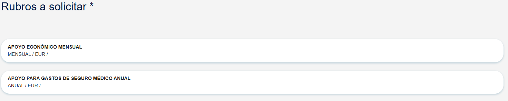

Becas
Ejemplo de llenadoPasos 1 y 2: Trayectoria Académica
En la sección de trayectoria académica se debe registrar el estudio de ingeniería del ITM Mérida.
Plataforma Rizoma (Registro de Beca) →
Página oficial para registrarse cuando la convocatoria esté abierta.
💡 Tip de búsqueda: Para encontrar la escuela en el buscador, asegúrate de escribirla completamente en mayúsculas y sin acentos.


Paso 3: Escuela de Destino
Aquí se debe agregar la escuela de Alemania a la que vas a aplicar (HTW Saar) y buscar la maestría correspondiente en la plataforma.

Paso 4: Áreas Relacionadas
En esta sección se seleccionan las áreas de conocimiento y especialidades que estén relacionadas directamente a la maestría.

Paso 5: Fechas del Programa
Se determinan y colocan las fechas exactas conforme a los inicios y fines de semestre dados por la HTW. Considera que la fecha límite (duración del programa) es de 2 años.

Paso 6: Apoyos y Seguro Médico
Aquí se seleccionan los dos apartados correspondientes: el apoyo general mensual y el apoyo para el gasto de seguro médico.

Paso 7: Especificaciones
Se debe proporcionar el enlace a la página web de la maestría y adjuntar el archivo oficial con las especificaciones y plan de estudios de la misma. Este documento resultante debe estar traducido.
⚠ ¡Nota Importante! Todos los documentos que se encuentren en otro idioma deben ser traducidos al español.

Paso 8: Archivos Requeridos
Finalmente, carga todos los archivos y documentos oficiales adicionales que sean solicitados por la plataforma para completar el trámite.